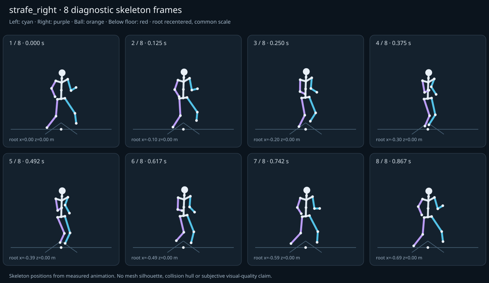

כל הקליפים · תצוגת התנועה · JSON המקור
ציון 92.8 · כיסוי 100%
הסוליות נמדדות בתרחיש תנועה חיצוני מוצהר; Root בנכס נשאר קבוע. הרציפות משתמשת בפוזה המקומית.

| מדד | מצב | ערך | ציון | ראיות |
|---|---|---|---|---|
| החלקת רגליים | ירוק | 0.000042 | 99.92 | ראיות מקוריות{
"coordinateSpace": "native GLB plus explicitly declared external actor position and heading, applied once",
"supportSource": "declared",
"windows": 2,
"samples": 98,
"maxDriftMeters": 0.00007,
"p95SpeedMetersPerSecond": 0.006099,
"worst": {
"bone": "RightFoot",
"t": 0.316667,
"start": 0,
"end": 0.398667,
"driftMeters": 0.00007
}
} |
| חדירה לרצפה | ירוק | 0 | 100 | ראיות מקוריות{
"samples": 2140,
"floorY": 0,
"probeKind": "declared sole probes plus skeletal joint centers (no mesh surfaces)",
"maxDepthMeters": 0,
"worst": {
"t": 0,
"bone": "LeftFoot",
"depthMeters": 0,
"y": 0.009361
}
} |
| קפיצות פוזה | ירוק | 0.484863 | 90.3 | ראיות מקוריות{
"adjacentPairs": 106,
"observations": 1802,
"maxDegrees60Hz": 4.098247,
"maxMarkerStepHeight60Hz": 0.019395,
"maxRootStepHeight60Hz": 0.00789,
"worst": {
"ratio": 0.4848625979033277,
"t": 0.666667,
"previousTime": 0.658333,
"bone": "RightFoot",
"markerStepHeight60Hz": 0.019395,
"degrees60Hz": 3.761407
}
} |
| חריגות אנטומיות | ירוק | 0 | 100 | ראיות מקוריות{
"testedFrames": 107,
"affectedFrames": 0,
"checks": 1819,
"maxLimbFlexionDegrees": 93.970839,
"maxRelativeSegmentLengthChange": 0,
"hingeDirectionChecked": true,
"axialTwistChecked": false,
"violations": []
} |
| מגע בכדור | לא חל | — | — | ראיות מקוריות{} |
| כניסה ויציאה מול המתנה | צהוב | 2.662839 | 55.06 | ראיות מקוריות{
"entry": {
"ratio": 2.6628387458693896,
"t": 0,
"idleTime": 3.933333,
"markers": 17,
"rmsPositionHeight": 0.106514,
"rmsRotationDegrees": 31.271014,
"rmsVelocityHeightPerSecond": 0.175789,
"velocityEvaluated": true
},
"exit": {
"ratio": 2.6628387392040023,
"t": 0.866667,
"idleTime": 3.933333,
"markers": 17,
"rmsPositionHeight": 0.106514,
"rmsRotationDegrees": 31.271014,
"rmsVelocityHeightPerSecond": 0.184475,
"velocityEvaluated": true
},
"worstEndpoint": "entry",
"alignment": "horizontal root translation; raw asset poses used when provided"
} |
| מהירות גוף מול צעדים | ירוק | 0.000018 | 100 | ראיות מקוריות{
"rootSource": "sampled presented root",
"rootSpeedMetersPerSecond": 0.8,
"observedRootSpeedMetersPerSecond": 0.8,
"referenceRootSpeedMetersPerSecond": 0.8,
"supportSource": "declared",
"backwardSweepSpeedMetersPerSecond": 0.800015,
"cadenceStepsPerSecond": 2.307692,
"impliedStrideMeters": 0.693346,
"rootStrideMeters": 0.693333,
"supportSweeps": [
{
"bone": "RightFoot",
"start": 0,
"end": 0.398667,
"duration": 0.398667,
"sweepMeters": 0.318939,
"speedMetersPerSecond": 0.800015
},
{
"bone": "LeftFoot",
"start": 0.433333,
"end": 0.832,
"duration": 0.398667,
"sweepMeters": 0.318932,
"speedMetersPerSecond": 0.799997
}
]
} |
| סימטריה | ירוק | 0 | 100 | ראיות מקוריות{
"mode": "mirrored clip pair",
"modeSource": "declared",
"structuralMismatch": 0,
"segments": [
{
"segment": "Arm-ForeArm",
"mismatch": 0
},
{
"segment": "ForeArm-Hand",
"mismatch": 0
},
{
"segment": "UpLeg-Leg",
"mismatch": 0
},
{
"segment": "Leg-Foot",
"mismatch": 0
}
],
"motionRmsHeight": 0,
"worstMotion": {
"t": 0.491667,
"errorHeight": 0
},
"bilateralPoseRmsHeightUnscored": 0.092575,
"note": "One-sided authored actions are checked for structural symmetry only."
} |